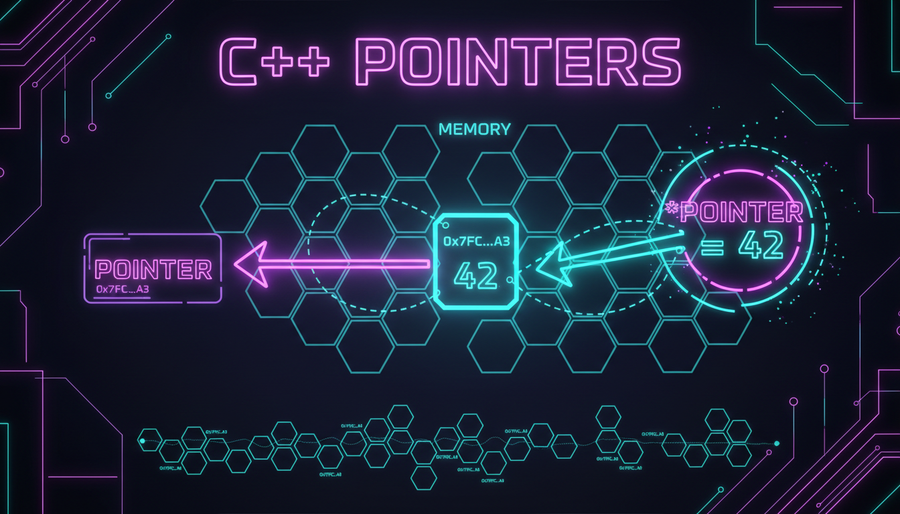

Оголошення вказівників, оператори & та *, nullptr

Вказівник — це змінна, що зберігає адресу пам'яті іншої змінної. Вказівники — одна з найпотужніших і водночас найскладніших концепцій C++.
#include <iostream>
int main() {
int x = 42;
int* ptr = &x; // ptr зберігає адресу x
std::cout << "Значення x: " << x << std::endl;
std::cout << "Адреса x: " << &x << std::endl;
std::cout << "Вказівник ptr: " << ptr << std::endl;
std::cout << "Значення за адресою: " << *ptr << std::endl;
// Зміна значення через вказівник
*ptr = 100;
std::cout << "Нове x: " << x << std::endl;
return 0;
}| Оператор | Назва | Опис |
|---|---|---|
| & | Адреса | Повертає адресу змінної |
| * | Розіменування | Доступ до значення за адресою |
| -> | Стрілка | Доступ до членів через вказівник |